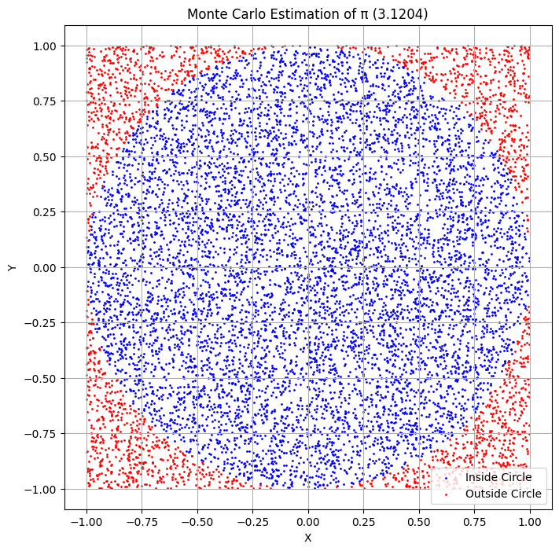
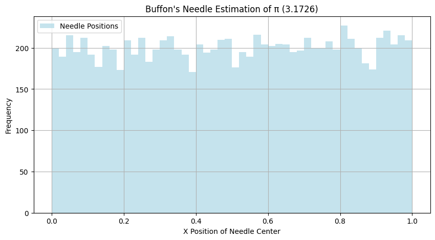

Problem 2
Estimating Pi Using Monte Carlo Methods
Motivation
Monte Carlo simulations are a powerful class of computational techniques that use randomness to solve problems or estimate values. One of the most elegant applications of Monte Carlo methods is estimating the value of π through geometric probability. By randomly generating points and analyzing their positions relative to a geometric shape, we can approximate π in an intuitive and visually engaging way.
This problem connects fundamental concepts of probability, geometry, and numerical computation. It also provides a gateway to understanding how randomness can be harnessed to solve complex problems in physics, finance, and computer science. The Monte Carlo approach to π estimation highlights the versatility and simplicity of this method while offering practical insights into convergence rates and computational efficiency.
Deliverables
Markdown Document
- Clear explanations of the methods and formulas.
- A discussion of theoretical foundations and results.
Python Scripts
- Code for the circle-based Monte Carlo method.
- Code for the Buffon’s Needle method.
Graphical Outputs
- Plots showing random points for the circle-based method.
- Visualizations of needle positions for Buffon’s Needle.
Analysis
- Tables or graphs showing the convergence of estimated π as a function of the number of iterations for both methods.
- A comparison of the methods in terms of accuracy and computational efficiency.
Part 1: Estimating π Using a Circle
Theoretical Foundation
\(1.\) The ratio of points inside a circle to the total number of points in a square can be used to estimate π.
\(2.\) For a unit circle \((radius = 1)\), the formula for π is derived using the area of the circle \((πr²)\) and the area of the bounding square \((4r²)\).
\(3.\) By randomly generating points within the square, we count the number that falls inside the circle and use the ratio to approximate π.
Simulation
Below is the Python implementation of the circle-based Monte Carlo method:
import numpy as np
import matplotlib.pyplot as plt
def estimate_pi_circle(num_points):
points_inside_circle = 0
x_points, y_points = [], []
for _ in range(num_points):
x, y = np.random.uniform(-1, 1), np.random.uniform(-1, 1)
x_points.append(x)
y_points.append(y)
if x**2 + y**2 <= 1:
points_inside_circle += 1
pi_estimate = 4 * points_inside_circle / num_points
return pi_estimate, x_points, y_points
# Parameters
num_points = 10000
pi_estimate, x_points, y_points = estimate_pi_circle(num_points)
# Visualization
inside_circle = [x**2 + y**2 <= 1 for x, y in zip(x_points, y_points)]
plt.figure(figsize=(8, 8))
plt.scatter(np.array(x_points)[inside_circle], np.array(y_points)[inside_circle], s=1, color='blue', label='Inside Circle')
plt.scatter(np.array(x_points)[~np.array(inside_circle)], np.array(y_points)[~np.array(inside_circle)], s=1, color='red', label='Outside Circle')
plt.title(f"Monte Carlo Estimation of π ({pi_estimate:.4f})")
plt.xlabel("X")
plt.ylabel("Y")
plt.legend()
plt.axis('equal')
plt.grid()
plt.show()

Analysis
- Observe how the estimate of π improves as the number of points increases.
- Discuss convergence rates and computational considerations for this method.
Part 2: Estimating π Using Buffon’s Needle
Theoretical Foundation
\(1.\) Buffon’s Needle problem estimates π using the probability of a needle crossing parallel lines on a plane.
\(2.\) The derived formula is:
$$ \pi = \frac{2 \cdot \text{Needle Length} \cdot \text{Num Throws}}{\text{Num Crosses} \cdot \text{Distance Between Lines}} $$
Simulation
Below is the Python implementation of Buffon’s Needle method:
import numpy as np
import matplotlib.pyplot as plt
def estimate_pi_buffon(needle_length, distance_between_lines, num_throws):
num_crosses = 0
x_positions, angles = [], []
for _ in range(num_throws):
x_center = np.random.uniform(0, distance_between_lines / 2)
angle = np.random.uniform(0, np.pi / 2)
x_positions.append(x_center)
angles.append(angle)
if x_center <= (needle_length / 2) * np.sin(angle):
num_crosses += 1
pi_estimate = (2 * needle_length * num_throws) / (num_crosses * distance_between_lines)
return pi_estimate, x_positions, angles
# Parameters
needle_length = 1
distance_between_lines = 2
num_throws = 10000
pi_estimate, x_positions, angles = estimate_pi_buffon(needle_length, distance_between_lines, num_throws)
# Visualization
x_line = np.linspace(0, distance_between_lines, 100)
y_lines = np.arange(0, num_throws, 2)
plt.figure(figsize=(10, 5))
plt.hist(x_positions, bins=50, color='lightblue', alpha=0.7, label='Needle Positions')
plt.title(f"Buffon's Needle Estimation of π ({pi_estimate:.4f})")
plt.xlabel("X Position of Needle Center")
plt.ylabel("Frequency")
plt.legend()
plt.grid()
plt.show()

Analysis
- Investigate how the number of needle drops affects the estimate’s accuracy.
- Compare the convergence rate of this method to the circle-based approach.